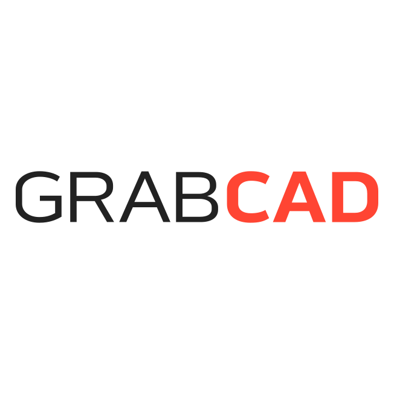
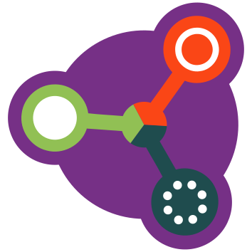

Pierre Padilla Huamantinco
🧑🏽🔬 PhD(c) in Biological and Medical Engineering | 🦠 Open-Source Hardware and Microfluidics for Microbiome Analysis | 📢 Advocate of Open Science Hardware
Social Media
BlueskyFollow on X
Research and Development
Zenodo
CAD Design and 3D printing
GrabCADPrintables
Thingiverse
Communities
Gathering for Open Science Hardware
This work is licensed under a Creative Commons Attribution 4.0 International License.